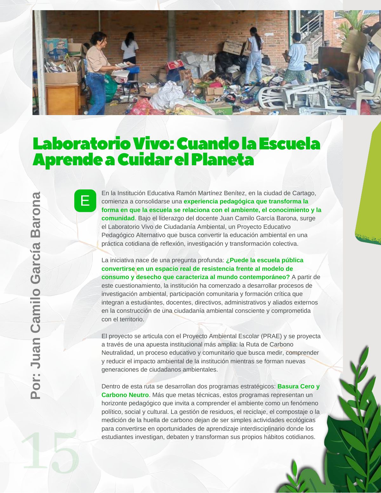
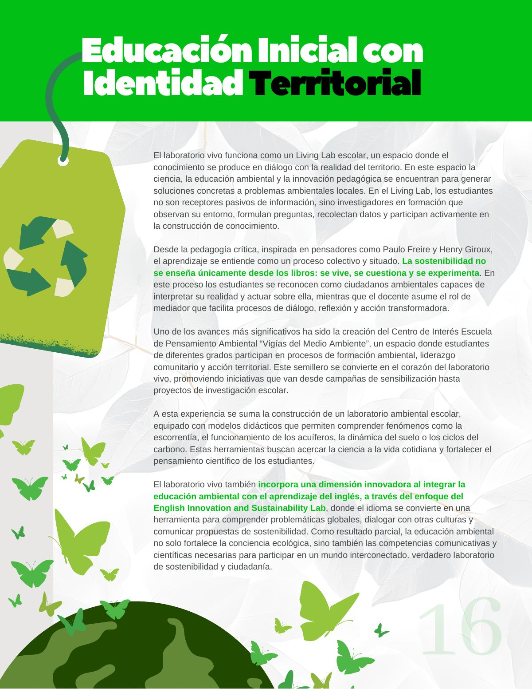
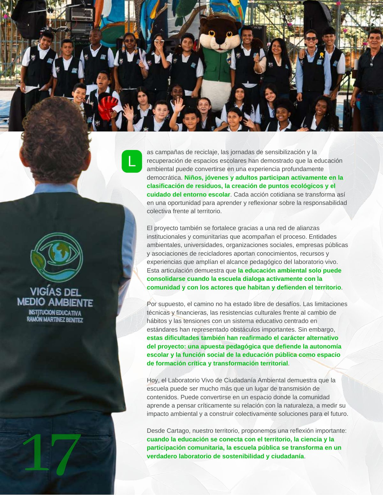

Laboratorio vivo: cuando la escuela aprende a cuidar el planeta
Cómo una escuela transforma el aprendizaje en acción ambiental y demuestra que educar también es aprender a cuidar el planeta.
PDF · 3 págs. · 7,8 MBEn la Institución Educativa Ramón Martínez Benítez, en la ciudad de Cartago, comienza a consolidarse una experiencia pedagógica que transforma la forma en que la escuela se relaciona con el ambiente, el conocimiento y la comunidad. Bajo el liderazgo del docente Juan Camilo García Barona, surge el Laboratorio Vivo de Ciudadanía Ambiental, un Proyecto Educativo Pedagógico Alternativo que busca convertir la educación ambiental en una práctica cotidiana de reflexión, investigación y transformación colectiva.
La iniciativa nace de una pregunta profunda: ¿Puede la escuela pública convertirse en un espacio real de resistencia frente al modelo de consumo y desecho que caracteriza al mundo contemporáneo? A partir de este cuestionamiento, la institución ha comenzado a desarrollar procesos de investigación ambiental, participación comunitaria y formación crítica que integran a estudiantes, docentes, directivos, administrativos y aliados externos en la construcción de una ciudadanía ambiental consciente y comprometida con el territorio.
El proyecto se articula con el Proyecto Ambiental Escolar (PRAE) y se proyecta a través de una apuesta institucional más amplia: la Ruta de Carbono Neutralidad, un proceso educativo y comunitario que busca medir, comprender y reducir el impacto ambiental de la institución mientras se forman nuevas generaciones de ciudadanos ambientales.
Dentro de esta ruta se desarrollan dos programas estratégicos: Basura Cero y Carbono Neutro. Más que metas técnicas, estos programas representan un horizonte pedagógico que invita a comprender el ambiente como un fenómeno político, social y cultural. La gestión de residuos, el reciclaje, el compostaje o la medición de la huella de carbono dejan de ser simples actividades ecológicas para convertirse en oportunidades de aprendizaje interdisciplinario donde los estudiantes investigan, debaten y transforman sus propios hábitos cotidianos.
El laboratorio vivo funciona como un Living Lab escolar, un espacio donde el conocimiento se produce en diálogo con la realidad del territorio. En este espacio la ciencia, la educación ambiental y la innovación pedagógica se encuentran para generar soluciones concretas a problemas ambientales locales. En el Living Lab, los estudiantes no son receptores pasivos de información, sino investigadores en formación que observan su entorno, formulan preguntas, recolectan datos y participan activamente en la construcción de conocimiento.
Desde la pedagogía crítica, inspirada en pensadores como Paulo Freire y Henry Giroux, el aprendizaje se entiende como un proceso colectivo y situado. La sostenibilidad no se enseña únicamente desde los libros: se vive, se cuestiona y se experimenta. En este proceso los estudiantes se reconocen como ciudadanos ambientales capaces de interpretar su realidad y actuar sobre ella, mientras que el docente asume el rol de mediador que facilita procesos de diálogo, reflexión y acción transformadora.
Uno de los avances más significativos ha sido la creación del Centro de Interés Escuela de Pensamiento Ambiental “Vigías del Medio Ambiente”, un espacio donde estudiantes de diferentes grados participan en procesos de formación ambiental, liderazgo comunitario y acción territorial. Este semillero se convierte en el corazón del laboratorio vivo, promoviendo iniciativas que van desde campañas de sensibilización hasta proyectos de investigación escolar.
A esta experiencia se suma la construcción de un laboratorio ambiental escolar, equipado con modelos didácticos que permiten comprender fenómenos como la escorrentía, el funcionamiento de los acuíferos, la dinámica del suelo o los ciclos del carbono. Estas herramientas buscan acercar la ciencia a la vida cotidiana y fortalecer el pensamiento científico de los estudiantes.
El laboratorio vivo también incorpora una dimensión innovadora al integrar la educación ambiental con el aprendizaje del inglés, a través del enfoque del English Innovation and Sustainability Lab, donde el idioma se convierte en una herramienta para comprender problemáticas globales, dialogar con otras culturas y comunicar propuestas de sostenibilidad. Como resultado parcial, la educación ambiental no solo fortalece la conciencia ecológica, sino también las competencias comunicativas y científicas necesarias para participar en un mundo interconectado. verdadero laboratorio de sostenibilidad y ciudadanía.
Las campañas de reciclaje, las jornadas de sensibilización y la recuperación de espacios escolares han demostrado que la educación ambiental puede convertirse en una experiencia profundamente democrática. Niños, jóvenes y adultos participan activamente en la clasificación de residuos, la creación de puntos ecológicos y el cuidado del entorno escolar. Cada acción cotidiana se transforma así en una oportunidad para aprender y reflexionar sobre la responsabilidad colectiva frente al territorio.
El proyecto también se fortalece gracias a una red de alianzas institucionales y comunitarias que acompañan el proceso. Entidades ambientales, universidades, organizaciones sociales, empresas públicas y asociaciones de recicladores aportan conocimientos, recursos y experiencias que amplían el alcance pedagógico del laboratorio vivo. Esta articulación demuestra que la educación ambiental solo puede consolidarse cuando la escuela dialoga activamente con la comunidad y con los actores que habitan y defienden el territorio.
Por supuesto, el camino no ha estado libre de desafíos. Las limitaciones técnicas y financieras, las resistencias culturales frente al cambio de hábitos y las tensiones con un sistema educativo centrado en estándares han representado obstáculos importantes. Sin embargo, estas dificultades también han reafirmado el carácter alternativo del proyecto: una apuesta pedagógica que defiende la autonomía escolar y la función social de la educación pública como espacio de formación crítica y transformación territorial.
Hoy, el Laboratorio Vivo de Ciudadanía Ambiental demuestra que la escuela puede ser mucho más que un lugar de transmisión de contenidos. Puede convertirse en un espacio donde la comunidad aprende a pensar críticamente su relación con la naturaleza, a medir su impacto ambiental y a construir colectivamente soluciones para el futuro.
Desde Cartago, nuestro territorio, proponemos una reflexión importante: cuando la educación se conecta con el territorio, la ciencia y la participación comunitaria, la escuela pública se transforma en un verdadero laboratorio de sostenibilidad y ciudadanía.
Así se ve en la revista
3 páginas

